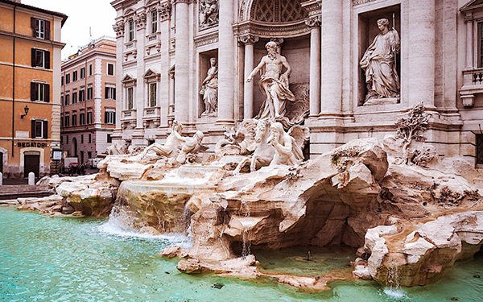

Roma
Roma es una ciudad italiana de 2.815.951 habitantes, capital de la región del Lacio y de Italia. Es el municipio más poblado de Italia y la tercera ciudad más poblada de la Unión Europea. Por antonomasia, se la conoce desde la Antigüedad como la Urbe (Urbs). También es llamada "La Ciudad Eterna" (en italiano: Città Eterna).
En el transcurso de su historia, que abarca tres milenios, llegó a extender sus dominios sobre toda la cuenca del Mediterráneo y gran parte de Europa, Oriente Próximo y África del Norte. Como capital de la República y del Imperio romano, llegó a ser la primera gran metrópolis de la humanidad, centro de una de las civilizaciones antiguas más importantes. Influyó en la sociedad, la cultura, la lengua, la literatura, la música, el arte, la arquitectura, la filosofía, la gastronomía, la religión, el derecho y la moral de los siglos sucesivos.
Es la ciudad con la más alta concentración de bienes históricos y arquitectónicos del mundo; su centro histórico delimitado por el perímetro que marcan las murallas aurelianas, superposición de huellas de tres milenios, es la máxima expresión del patrimonio histórico, artístico y cultural del mundo occidental. En 1980, junto a las propiedades extraterritoriales de la Santa Sede que se encuentran en la ciudad y la basílica de San Pablo Extramuros, fue incluida en la lista del Patrimonio de la Humanidad de la Unesco.
Roma es el corazón geográfico de la religión católica, ciudad santa del catolicismo y destino de peregrinación (vías romeas) y también la única ciudad del mundo que tiene en su interior una entidad estatal autónoma: el enclave de la Ciudad del Vaticano, que se encuentra bajo el poder temporal del papa. Por tal motivo se le ha conocido también como la capital de dos Estados.